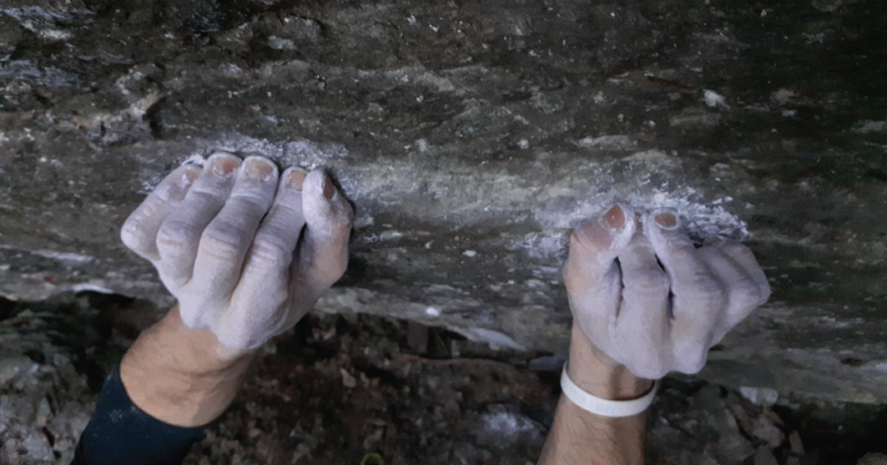

Rock Climber Heroically Conquers 12-Foot Gym Wall, Requests Sherpa Escort Down
Witnesses at CliffHaven Fitness erupted in applause as local climber Trevor "Gripmaster" Langley reached the summit of the gym’s beginner wall — a daunting twelve-foot masterpiece of slightly slanted plastic holds. After ringing the victory bell, Langley radioed for a "safe descent team" and declared, "It’s not about the height, it’s about the altitude of my ego." Experts report he’s now training to climb his apartment stairs without oxygen.
Gamer Completes Tutorial Without Skipping Cutscene, Declared "Philosopher" by Community
In an event historians are calling "unprecedented self-discipline," local gamer Riley Stokes completed a full tutorial mission without mashing the skip button. Fellow players described the act as "spiritual." Sociologists predict future textbooks will cite this moment as the dawn of the Enlightenment 2.0. Riley’s next goal: reading the terms of service before agreeing to them.
Man Loses $12 Million in Crypto, Says It’s "Fine" Because He’s Now Mentally Decentralized
After accidentally sending his life savings to a wallet labeled DefinitelyNotAScam.eth, self-proclaimed investor Chad Tokenstein announced he had "transcended material wealth" and now lives fully on the blockchain — emotionally, spiritually, and allegedly from his parents’ basement. Economists confirm his portfolio’s value is currently quantum-entangled with regret.